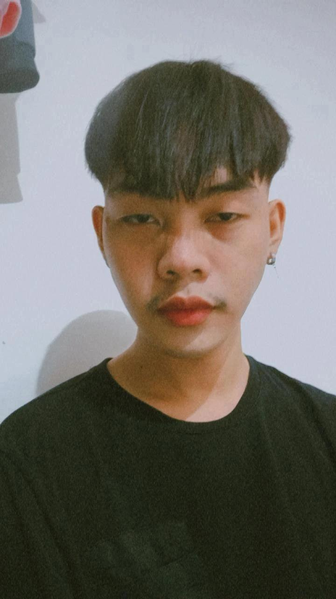

Computer Enthusiast | Hardware Specialist | Builder | Tech Explorer

Hi, I'm Ricks Ayoon, a passionate computer enthusiast with a deep love for hardware. I'm currently an Information Technology student, constantly exploring the world of computer components, assembling builds, and learning more about the technology that powers our devices. I’m particularly interested in understanding the intricacies of processors, graphics cards, motherboards, and other crucial components that make up a computer. Outside of my studies, I enjoy watching tech content creators who specialize in reviewing and breaking down the latest hardware trends. My goal is to connect with like-minded individuals who share a passion for hardware, and to keep pushing the boundaries of what I can build and learn in the world of computers.
Built a custom PC for gaming and content creation. Components included a high-end GPU, CPU, and liquid cooling system for optimal performance. This project gave me hands-on experience with compatibility, troubleshooting, and system optimization.
Created a dedicated tech bench setup for hardware testing and troubleshooting. This project focused on creating an efficient and organized space to test various computer parts and troubleshoot issues in custom builds.
Email: ricksayoon6@gmail.com
LinkedIn: linkedin.com/in/yourprofile
GitHub: github.com/ricks1988